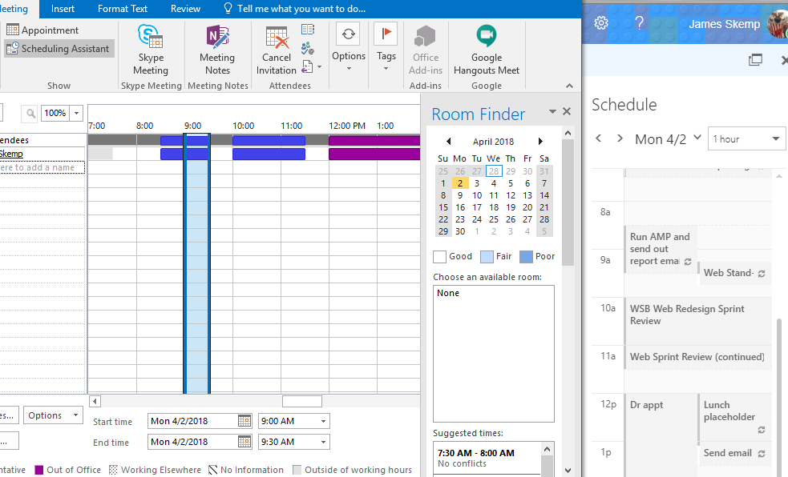

Don’t manage work email with Emacs
I do a lot of work in Emacs and at the command line, and I get quite a few emails so it would be great if I could handle my emails there too. Email in Emacs can be surprisingly featureful and handles HTML markup, images and can even send org markup with images and equations all from the comfort of an Emacs buffer. However it can be a whole heap of work, and as you get deeper into the features your mail client provides the amount of custom integration required grows very rapidly. It’s a good way to appreciate all the features of your current mail client, but you may be able to find a better use of your time.
Getting the basics of synchronising emails from an IMAP or Exchange server may take some time to setting up (and in some circumstances take a lot of time), but once they’re working it will be pretty smooth. Dealing with HTML and images and attachments works pretty well out of the box, unless you get a lot of custom office drawings in your email. Building an address book of frequent contacts is a bit of a pain, but with some work is possible. Synchronising email addresses from the server can be difficult, and may need to be done in batches - but you might be able to manually. Getting calendar invites is possible with a bit of hacking, but seeing other people’s calendars is very difficult. Finally if the server configuration is changed (like changing an authentication provider) you may have to spend a lot of time setting it up all over again.
The benefits are that it tends to be faster to get through emails (because they are on the local filesystem), you don’t need to change environments to use them and you can use all your favourite CLI tools on them. But unless email is a very large part of your working life (and it seems to be slowly losing out to instant messaging clients) it’s probably not worth the investment (unless you want to build a custom email automation tool one day!).
I’ll share some of my experience doing this for those who are hard to discourage.
Operating Environment
If you want to set up email from the command line or Emacs you’ll want to be working in a POSIXy environment, because that’s where all the tooling is. If your working environment supports Linux or Mac computers then it’s happy times. However if you’re working in Windows you have a few options.
The best Windows option is Windows Subsystem for Linux - it lets you run a whole Linux environment and works pretty well with Windows. There are a couple of creaky edges, mainly the filesystem is slow (which should be fixed in WSL2), but overall it’s the best solution if you can get the feature enabled.
If you can’t then working in a Virtualbox VM for Linux is the next best option; and you can configure it to be fairly seamless. However you can’t use it if there’s any other virtualisation on your machine like Docker for Windows. In fact some organisations use security software that uses virtualisation making it impossible to install Virtualbox. But if you can get Virtualbox running (or your organisation supports another virtualisation product) then it’s generally a good solution.
When all else fails there is good ol’ Cygwin. It doesn’t require any special permissions, so as long as you can run external applications on your computer it should work. It’s a bit clunky, and you may need to build some utilities (like isync, see below) yourself, but with a bit of work you can get a usable environment. I’ve heard msys2 is better but have never taken the time to understand it.
Synchronising email
You now need a way to pull email to your local filesystem and push emails back out. For pushing emails Postfix works great (and has a sendmail interface) and I’ve never needed anything else. For pulling emails you can run a email server like Dovecot, but it’s quite a bit of effort to set up. The easiest solution is to use isync/mbsync, or it’s slower cousin offlineimap.
Both mbsync and offlineimap have gnarly configuration options that will make you learn quite a bit about the low level details of email authentication and Maildir. And if you set the wrong options you might accidentally delete your whole email; so spend a lot of time reading through them and try it out on a test account before you run it on your precious emails. To get authentication details for your email provider the easiest thing to do is to search the web, and if you have a common email provider (like Gmail, Office365, Fastmail) you’ll likely find a blog with a sample configuration. If you’ve got an uncommon provider look in their documentation/settings for SMTP and IMAP; if the Auth method isn’t clear it’s best to try to set it up with Thunderbird first because it has some magic to automatically detect these settings and is more likely to work out of the box.
If your email provider doesn’t have IMAP enabled then you’re probably out of luck - unless it’s an exchange server. If you can’t get app passwords and need to use two factor authentication you may spend a lot of time trying to get this set up (and may have to implement the feature!).
If you’re on an Exchange server or on Office365 but can’t access IMAP then you can use the fantastic Davmail. Davmail also supports CalDAV and CardDAV for calendar and contacts (more on this later). The only issue is finding the Exchange server settings can take some sleuthing (or a beer with your local sysadmin). As before it’s best to get it working in Thunderbird before trying another synchronising tool, because it’s easiest to get working there.
Setting up a mail interface
So now you’ve got all your emails sitting in a maildir folder it’d be handy to have a tool for reading and writing email.
If you’re a serious vim user mutt may be a good option. notmuch has a powerful tag system, but you have to manually sync it yourself between servers (and the Emacs mode has too many special screens for my liking). In Emacs gnus is built-in, but has a byzantine configuration system that you could spend the rest of your life tweaking (like this John Wiegley’s). But gnus is apparently good if you’re on a lot of mailing lists. However for me mu and it’s Emacs counterpart mu4e work fantastically well - you just have to take the time to learn yet another query language (and if you use evil-mode there are mu4e keybindings in evil-collection).
This is generally pretty straightforward (especially if you can crib a configuration file that is close to what you need), but there are some traps like if you use mbsync and mu4e you need to set mu4e-change-filenames-when-moving to true or you’ll get all sorts of errors when trying to sync. You can then spend a bunch of time configuring how HTML is rendered, storing links to emails in org-mode and sending email from org-mode.
Dealing with contacts
Now you can write email you may want to store the addresses of people you want to contact. Many email providers support the CardDav format and you can synchronise it locally with a tool like ASynK or vdirsyncer. You can then import them into org contacts with org-vcard and configure mu4e to use them for auto-completion. Or use them with BBDB for Emacs email clients that support them, or write a script to convert them to Mutt aliases.
One problem is if you work for an enterprise with thousands of people that’s going to be a lot of email addresses, and the syncing or the interface may choke. You can probably get away with just manually copying the addresses of the people you email most often into the configuration of whatever tool you use. But once in a while you’ll want to email someone in your organisation and you may have to fall back to another tool to get the address book.
Calendars and meeting invites
Calendars is something where Outlook groupware really shines. You can see everyone’s calendar and schedule a meeting in free time using the scheduling assistant (and book meeting rooms!). While this can lead to the problem of calendar tetris where other people unilaterally fill the blanks in your Calendar, it’s generally a useful organisational feature and can sometimes even be used to list and book available meeting rooms.

I haven’t found anything that quite substitutes for it in an office environment. You could manage your calendar with a command line tool in khal or in Emacs with diary/calendar or org-agenda or calfw and synchronise it over iCal. You can probably even get meeting invites into your calendar and respond to the invitation (mu4e supports this). But I doubt there’s anything like the scheduling assistant and if you organise a lot of meetings in an Outlook office you’ll be falling back to Outlook a lot.
If you get this far you can spend a lot more time smoothing out the rough edges. It’s certainly possible to do, but worth thinking about whether it’s really going to pay off for the time investment. But maybe you can walk the path and enjoy the journey as much as I did.